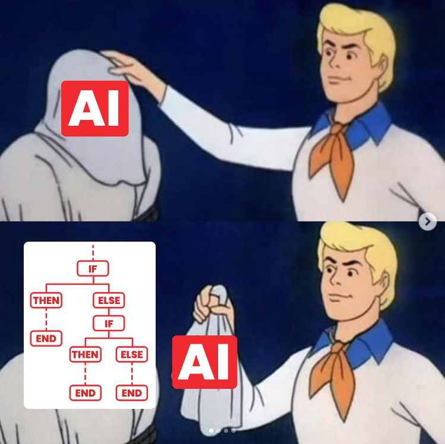
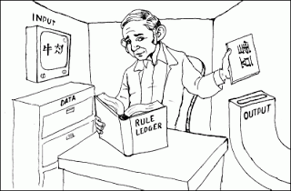

Algorithmic intelligence
Medical Expert Systems in the decades of 90 and 2000 used to have a similar behavior of what we are seeing so far: checking conditions and following through a flowchart. Programmers would add many Medical Logic Modules (MLM) to the health information system indicating what conditions and actions would be taken given some patient’s input.
This is today called the paradigm Classic or Symbolic Artificial Intelligence. (Nowadays we have a different paradigm, Adaptive AI, which uses data to train models instead of just elaborating logic flows).
- Questions:
- Can we consider intelligence as just following logic flowcharts?
- Is thinking just an algorithm? (See: computationalism/computational theory of mind)
- Is everything an algorithm? (See: pancomputationalism)

There are lot of critiques to this suggestive idea:
Critique 1: non-computability
Strictly speaking, there are problems that really can’t be solved by sequential, step-by-step instructions. These are called non-computable problems.
- Most of them include problems where there is not a way to determine if the machine will stop running code while searching for a solution (ex.: the Halting Problem).
A simple example: there is no algorithm to solve the 2048 game, famous in 2014.
However, problems like these can have their solution “approximated” with heuristics (exploring different options and seeing which is better). So one could argue that this is the way we think when trying to solve them… even though there is not an “analytical” way to solve.
Critique 2: the Chinese Room experiment
- Proposed by philosopher John Searle in 1980.

A person who does not understand Chinese sitting in a sealed room with a set of instructions in English for manipulating Chinese symbols. People outside the room slide Chinese symbols under the door, and the person inside follows a translation table to produce appropriate responses in Chinese, without actually comprehending the meaning of the symbols.
Searle’s argument is that even though the person inside the room can generate responses that seem intelligent to those outside, the person doesn’t truly understand Chinese; they are just manipulating symbols according to a set of rules. Similarly, Searle argues that a computer program that processes symbols according to a set of rules (like many AI systems) may simulate intelligence but does not possess genuine understanding or consciousness.
Critique 3: why are we really wanting that?
Philosopher Hubert Dreyfus made a powerful critique to Classic AI in his 1972 book “What Computers Can’t Do”.
His argument is long and complex, and involves noticing that human intelligence is fundamentally embodied and situated in a certain narrative, and since an artificial device wouldn’t have this, it cannot mimic completely how humans reason (we’re exploring a bit of that in a moment).
In any case, Dreyfus reflected on the quest for Artificial Intelligence as the quest of almost all Western science and philosophy (emphasis added):
“Since the Greeks invented logic and geometry, the idea that all reasoning might be reduced to some kind of calculation so that all arguments could be settled once and for all has fascinated most of the Western tradition’s rigorous thinkers. Socrates was the first to give voice to this vision. The story of artificial intelligence might well begin around 450B.C. when (according to Plato) Socrates demands of Euthyphro, a fellow Athenian who, in the name of piety, is about to turn in his own father for murder:”I want to know what is characteristic of piety which makes all actions pious … that I may have it to turn to, and to use as a standard whereby to judge your actions and those of other men. Socrates is asking Euthyphro for what modern computer theorists would call an “effective procedure,” “a set of rules which tells us, from moment to moment, precisely how to behave.
“The belief that such a total formalization of knowledge must be possible soon came to dominate Western thought. It already expressed a basic moral and intellectual demand, and the success of physical science seemed to imply to sixteenth-century philosophers, as it still seems to suggest to thinkers such as Minsky, that the demand could be satisfied.”
- Another philosopher, Michael Polanyi, explored how knowledge can be tacit - in other words, it cannot be turned to explicit words and rules (The Tacit Dimension).
- Sociologist Harry Collins, who we presented previously, has also argued about that in his books The Shape of Actions and Artifictional Intelligence. Algorithms still don’t seem to share with us a form of life in order to make sense of the dynamic, situated and embodied character of human life.
Take home message: algorithmic intelligence can correctly, and usefully, mimicry some human reasoning. We can be grateful for that. But this can be limited, and there are lots of reasons to believe that our intelligence goes beyond mere mathematical/logical rule-following. Therefore, so far, it seems we haven’t yet seen an undebatable way to mimic human intelligence exhaustively.
Calvin professor Ken Arnold’s opinion: Avoid Magical Thinking about AI